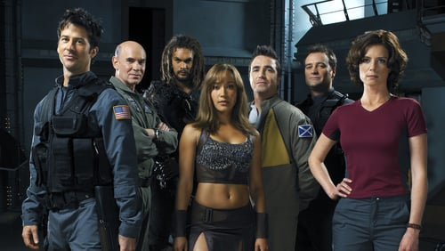
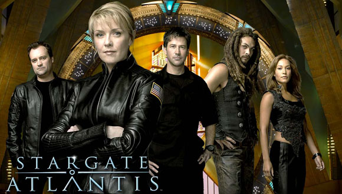
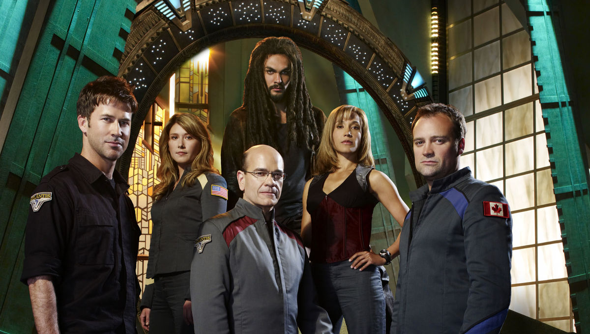

Stargate atlantis was started as Stargate SG-1 was entering it's it's 8th season and follows a while new Sg team to a far away galaxy called the Pegasus Galaxy. The team after a mind blowing battle in the antarctic discover a weapons platform that has a new address in it which is 8 chevrons instead of the traditonal 7 Chevrons. They are finally able to dial it up with the help of a Zero Point Module or ZPM, which is an ancient device that has great amounts of energy capable of sending people accross vast distances such as galaxy to galaxy.
Atlantis was submerged when they arrived and well later on in the series we learn that the was a fail safe installed by the first leader of the Atlantis expadition. They awaken a race called the Wraith who are life sucking aliens accidentally engineered by the "Ancients" and over the series are trying to find a way to take over atlantis and find their way to earth.
Another antagonist of the story are the replicators who the "Ancients" created as tiny nanites that can take human form or really any form they want. They become a big threat in the third season but the SG team finds a way to put an end to their terror but not without loosing an important team member